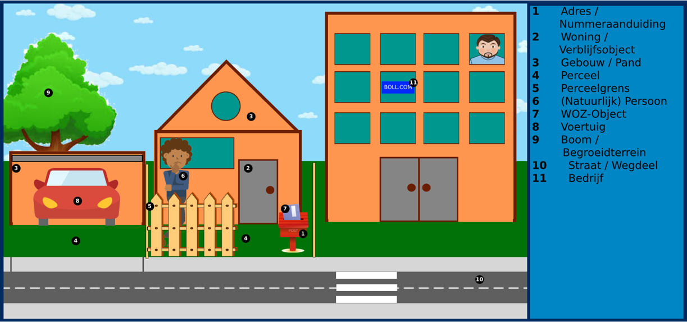
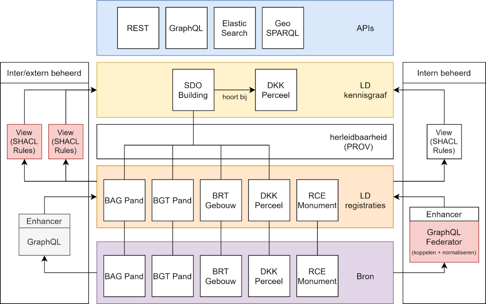

Knowledge Graph
Wanneer we (basis-)registraties beschikbaar gesteld als Linked Data, is er nog steeds een grote hoeveelheid domeinkennis nodig om de data goed te gebruiken. Zo kunnen bijvoorbeeld alleen BAG en BGT specialisten die data en het datamodel goed kennen gemakkelijk interacteren met de data. In de praktijk zijn veel gebruikers geïnteresseerd in data over hun huis, wijk of leefomgeving. Om die reden slaan we de complexe basisregistraties en andere overheidsdatasets plat tot een Knowledge Graph voor een bepaald doeleinde. Hierbij kunnen we er ook voor kiezen additionele versimpelingen toe te passen, zoals het abstraheren van historie in de registraties.
Knowledge Graph datamodel
In de praktijk praten gebruikers vaak niet in termen als Nummeraanduiding, Verblijfsobject of Bestuurlijk Gebied, maar over adressen, gebouwen en wijken. Gebruikers denken in termen van hun fysieke leefomgeving.

Schema.org
In het maken van een gebruiksvriendelijk datamodel kan ervoor gekozen worden om termen uit de basisregistraties te hergebruiken (zoals Pand of Perceel). Er kan ook voor gekozen worden om de data naar een nog meer generiek en open standaard te brengen, zoals Schema.org. Deze standaard is geïntrodueerd door Google en behelst een manier van data omschrijving waarmee moderne zoek machines goed aan de slag kunnen. Objecten, pagina's en websites die met deze standaard zijn omschreven zijn dan ook over het algemeen goed vindbaar op het web. Een voorbeeld van een dergelijk datamodel:

LD Views
Om technisch tot een invulling te komen van een Knowledge Graph bovenop onze registratieve Linked Data, maken wij gebruik van zgn. LD Views. Met deze aanpak transformeren we de registratieve laag naar een additionele laag dat gebruik maakt van bovengenoemd datamodel.

In deze architectuur zijn een aantal zaken van belang. We beginnen met brondata (paarse laag) zoals eerder beschreven in Brondata. Deze zetten we middels GraphQL en de Enhancer om naar registratieve Linked Data (de oranje laag).
Vanuit daar creeëren we één of meerdere Views (afhankelijk van gebruik) op deze data, welke laag we dan ook de Knowledge Graph noemen. Governance technisch zal een business architect moeten bepalen welke data er in deze laag moet zitten - en waar deze data vandaan moet komen. Het unieke hier is dat de data op zichzelf vaak al bevraagbaar is (middels uitgebreide en complexe SPARQL queries op de registratieve Linked Data), maar dat deze voor gemakkelijk gebruik persistent wordt opgeslagen. Voor verschillende doeleinden kunnen verschillende LD Views ontstaan in de toekomst.
We geloven heel erg in het statement One size fits none. Immers, er valt niet één datamodel, één dataset of één manier van ontsluiting te bedenken waar alle gebruikers baat bij hebben. Door dit wel na te streven lopen we het risico een oplossing te creeëren die voor niemand echt de perfect aansluiting geeft. Daarom houden we de brondata grotendeels intact en staan we toe op basis van verschillende use cases één of meerdere Knowledge Graphs beschikbaar te stellen.
SPARQL Construct
We gebruiken vervolgens SHACL Rules om de data om te zetten naar het Knowlegde Graph datamodel. Dit is een combinatie van SPARQL Construct queries waarmee de bestaande data wordt getransformeerd naar het nieuwe model. Een voorbeeld van een dergelijke query is:
prefix bag: <https://bag2.basisregistraties.overheid.nl/bag/def/>
prefix dct: <http://purl.org/dc/terms/>
prefix foaf: <http://xmlns.com/foaf/0.1/>
prefix geo: <http://www.opengis.net/ont/geosparql#>
prefix prov: <http://www.w3.org/ns/prov#>
prefix sdo: <https://schema.org/>
prefix skos: <http://www.w3.org/2004/02/skos/core#>
construct {
?city
a sdo:City;
prov:wasDerivedFrom ?woonplaatsRegistratie;
sdo:geo ?shape;
sdo:name ?name.
?shape a sdo:GeoShape;
sdo:polygon ?polygon.
} where {
?woonplaatsRegistratie
a bag:WoonplaatsRegistratie;
bag:geometrie ?polygon;
dct:identifier ?id;
foaf:primaryTopic ?woonplaats;
skos:prefLabel ?name.
filter not exists { ?woonplaatsRegistratie prov:invalidatedAtTime []. }
bind(iri(concat("https://data.labs.kadaster.nl/kadaster/kg/id/city/",str(?id))) as ?city)
bind(iri(concat("https://data.labs.kadaster.nl/kadaster/kg/id/geo-shape/",str(?id))) as ?shape)
}
limit 1
Uitgangspunt is deshalve dat de data origineel beschikbaar is gemaakt in de registratieve Linked Data laag. Daarna kan er op - op basis van deze brondata - een View worden gegenereerd met SPARQL queries. Deze nieuwe Knowledge Graph bevat een provenance (i.e. data lineage) naar de originele brondata.
Provenance
Essentieel uitgangspunt bij het transformeren van de data naar de Knowledge Graph is dat de data lineage herleidbaar blijft. Attributen en objecten komen uit een bepaalde dataset en een bepaald gegeven binnen deze dataset. Deze lineage houden we traceerbaar middels de prov standaard zoals gestandaardiseerd door het W3C. Zo is in bovenstaande SPARQL construct query een aantal keer de term prov:wasDerivedFrom te zien. Deze triple geeft dus - op een specifiek gegeven - aan waar deze vandaan komt.